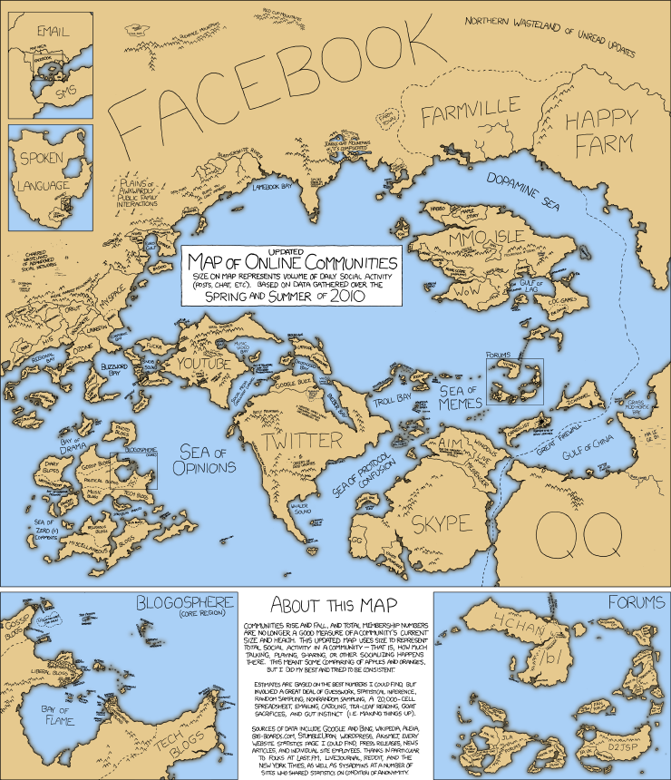
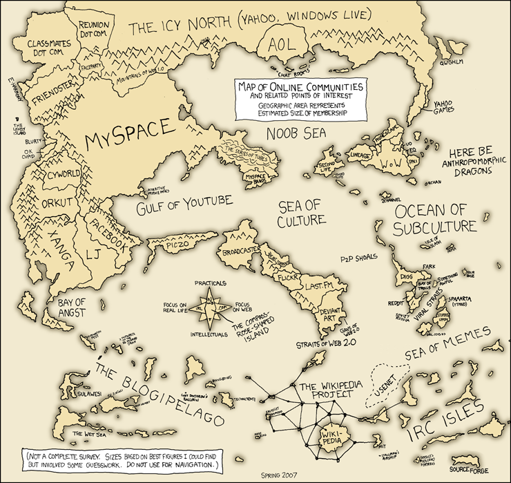

Something tells me that Glen Worthey’s desired map of the Digital Humanities would look more like this:

XKCD Map of Communication, ver. 2
While enjoyable and probably not deserving of too critical a gaze, it illustrates the problem of metrics and visualization in dealing with large sets of data. The implicit biases of the data collection and storage method are not made explicit. While the transition from the prior map indicates change, I cannot help but think the definitions of the data that went into this map are far more important than the aggregation of said data–spatially, creatively or otherwise.

XKCD Map of Communication, ver. 1